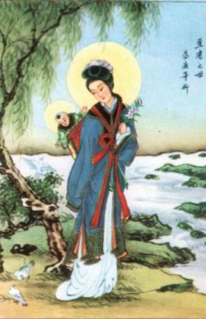

PRELÚDIO
Os prodígios
acontecidos em Akita, no Japão, é um testemunho evidente que grita ao coração
da humanidade, querendo acordar as 
É uma sequência de fatos desconcertantes e extraordinários, que nos traz presente a preocupação da VIRGEM MARIA com a humanidade, revelando a última Vontade do SENHOR, e, sobretudo, deixando-nos as suas “palavras silenciosas”, pronunciadas através de Suas Lágrimas Maternas, revelando a face do seu sentimento puríssimo, que quer abraçar a todos nós, estreitando-nos no âmago mais profundo do Seu IMACULADO CORAÇÃO de MÃE.
Como disse o saudoso Papa João Paulo II: “As lágrimas de MARIA tem um tríplice significado: São “lágrimas de dor”: que Ela derrama por quantos rejeitam o Amor de DEUS: são lágrimas pelas famílias desagregadas ou em dificuldades, são lágrimas pela juventude insidiada pela sociedade de consumo e frequentemente desorientada pela violência que faz correr tanto sangue, em face das incompreensões e ódios que escavam depressões profundas entre as pessoas, entre os povos e as nações. São “lágrimas de oração”: oração da Mãe que dá força e se eleva súplice ao CRIADOR, mesmo por aqueles que rezam, por aqueles que não rezam, pelos distraídos com mil outros interesses, ou porque obstinadamente estão fechados ao chamamento de DEUS. São “lágrimas de esperança”, que abrandam a dureza dos corações e abre-os ao encontro de CRISTO Redentor, fonte de luz e de paz, para todos os indivíduos, para as famílias e para a sociedade inteira”.
A Mensagem de Akita nos faz compreender que é uma extensão das Mensagens que em 1917 NOSSA SENHORA transmitiu em Fátima, aos três pequenos pastores, e também, completa as Mensagens que a MÃE DE DEUS transmitiu em Garabandal, na Espanha de 1961-1965, a quatro meninas, deixando em evidencia o Amor de DEUS por todos nós e as derradeiras tentativas Divinas para acordar a humanidade do torpor da indiferença, do comodismo e da descrença.
Em Akita, NOSSA SENHORA escolheu a Irmã Inês como mensageira e através dela fez chegar ao conhecimento das autoridades eclesiásticas e do povo em geral, o teor de suas preciosas Mensagens.
A Irmã Inês é moça de família simples, que nasceu muito frágil e enfrentou sérios problemas de saúde, e foi totalmente curada por DEUS, de todos os seus males. Assim iniciaremos o relato dos fatos extraordinário acontecidos, descrevendo primeiramente um pouco da vida de Inês, objetivando colocar em realce os cuidados da Providência Divina.
O APOSTOLADO DOS SAGRADOS CORAÇÕES, construiu este Site, fundamentado no livro “NOSSA SENHORA DE AKITA” (As lágrimas e a mensagem de MARIA), escrito pelo Padre Teiji Yasuda, que era o Capelão do Convento das Servas da Eucaristia, com sede em Yuzawadai, na Diocese de Niigata, no Japão, onde ocorreram as Manifestações Sobrenaturais, e que é testemunha de quase todos os acontecimentos. E por isso mesmo, com muita satisfação aqui apresentamos neste Site, o resumo essencial de todos os fatos, assim como o teor completo das três Mensagens da VIRGEM MARIA.
Para um amplo entendimento da última Vontade Divina, recomendamos a leitura com a necessária meditação sobre todos os acontecimentos focalizados neste Site, assim como também, a leitura dos Sites: NOSSA SENHORA DE FÁTIMA – Segredos e Mistério e NOSSA SENHORA DO CARMO DE GARABANDAL, que são encontrados no PORTAL DO APOSTOLADO, endereço abaixo:
http://www.apostoladosagradoscoracoes.com/